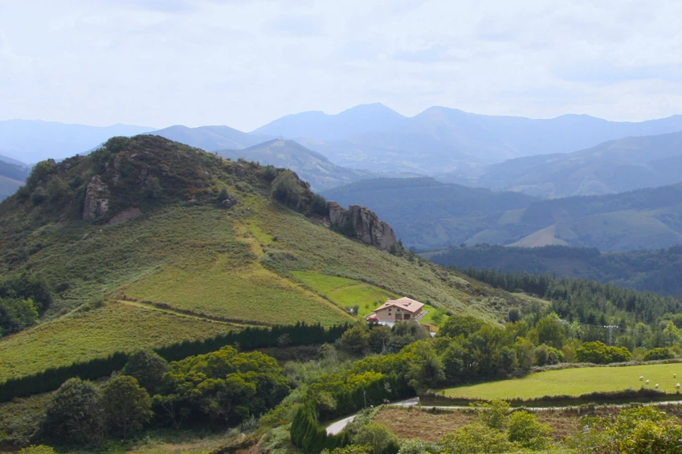

Nola iritsi
Bera eta Ibardin artean, Gipuzkoa, Nafarroa eta Frantzia artean
Irundik 15 minutura, Donostiatik 30era eta Iruñetik 45era.
Finca Bera de Bidasoan dago kokatuta, Irundik 15 minutura besterik ez, Donostiatik 30 minutura eta Iruñetik 45 minutura.
Okalarre Beratik Ibardinera iristear dagoen desbideratze batean dago. Kilometro 1eko bide asfaltatu eroso batetik landaretza oparo batean barneratzen gara eta berehala iristen gara Okalarre eraikita dagoen begiratoki batera.
Bidasoako lurretan, Euskal Kostaldeko mendiaz gozatzen dugu: Ibardin, Lapurdiko kostaldetik gertu, Beran (Nafarroa). Ibardin auzoa itsas mailatik 350 m-ko altueran dago. Errepidez sar daiteke, bai Nafarroako aldetik, Beratik 5 km inguruko portu txiki bat igoz, bai Iparraldetik, Urruñatik 6,5 km inguruko portu txiki bat igoz.